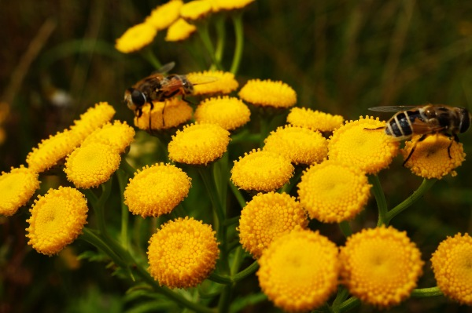

Cool facts about bees
saveourbees.com.au
1. A Honey bee colony has about 50,000 bees
More than 99% are infertile female bees(worker bees). At most only few hundred male
bees (drones) and just one mother (the queen bee).
2. A queen bee will only mate once in its lifetime
This is usually in the first 10 days of its life when it will go on a mating
flight to mate with about 15 to 20 drones in mid-air. It will then store about
100 million sperm in its spermatheca for its entire life.
3. A queen bee can lay twice it's body weight in eggs each day
That's about 2500 eggs in a single day.
4. Bees have 4 wings, 6 legs and 5 eyes
This includes 3 simple eyes and 2 compound eyes made up of around
7,000 facets or lenses each.
5. Bees see blue better than red
This enables bees to see ultraviolet light and use this to help
navigate their way around and assist identifying flowers as they pollinate.
Yet bees cannot distinguish red colours well at all.
6. A bee flaps its' wings up to 200 times per second
This produces the familiar bee buzz. This rapid flapping produces a small
positive charge that attracts pollen to its furry body from flowers that are
negatively charged naturally.
7. Worker bees communicate with a dance
Whilst all bees produce and sense pheromones to communicate, only
the worker bees dance to communicate with other workers. This is known as
the waggle dance. She will rapidly shake her body from side to side in a
certain direction to tell worker bees which direction and how far food
sources can be found.
8. Bees collect and produce more than just honey
These include many things used by the bees and harvested by humans including
propolis, pollen, beeswax, royal jelly and bee venom.
9. A honey bee will produce about 1/12 of a teaspoon
of honey in it's lifetime
This depends on where the bees live and from which flowers bees are able to
forage. This means bees will collectively visit thousands of flowers to make
just one teaspoon full of honey.
10. The drones only purpose in life is to mate with a queen bee
It does not work or forage at all and can not sting.
11. Drones do not have a father
But have only a mother and a grandfather. The drone is created from and
unfertilised egg and inherits all its genetics from its mother and grandfather.
This is known as parthenogenesis.